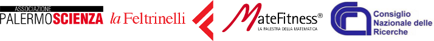

You are herebambini
bambini
Costruire e interpretare le mappe: tra l'isola che non c'è e la fantasia dei bambini!
Lunedì 20 gennaio, nella sede del Centro per la scienza sito presso l'IC Cruillas di Palermo (via Salerno 19), l'associazione PALERMOSCIENZA ha dato il via alle visite guidate dedicate alla mostra Costruire e interpretare le mappe, fase conclusiva di un progetto annuale finanziato dal MIUR. Gli esperti dell'associazione hanno guidato i piccoli visitatori in un percorso incentrato sui nuovi exhibit ispirati alla cartografia e alla rappresentazione del territorio, che da poco arricchiscono la mostra permanente già esistente.
Tra questi, tre exhibit realizzati dagli studenti dell'Istituto d'Arte V. Ragusa e O. Kjoara di Palermo e uno ideato dall'associazione PALERMOSCIENZA, la cui progettazione esecutiva e realizzazione è a cura di Agostino Di Trapani.
Sarà possibile visitare la mostra da lunedì 27 a giovedì 30 gennaio, dalle 9.30 alle 13.00, su prenotazione. Per ulteriori informazioni contattare i seguenti numeri telefonici (attivi dalle 10.00 alle 13.00 e dalle 16.00 alle 19.00):
366 8028227 / 333 4612148
o scrivere a:
Nel video le immagini di una delle prime visite guidate, con alcuni piccoli visitatori ricchi di fantasia e voglia di scoprire.
Vi aspettiamo!
La Scienza con Leggerezza... da Mondadori Multicenter: l'anno nuovo continua con l'astronomia!
Continua il progetto Mappe e Percorsi, il ciclo di laboratori dedicati ai bambini e ai ragazzi di diverse fasce di età (5-12 anni), ideato dall'associazione PALERMOSCIENZA, in collaborazione con Mondadori Multicenter.
Con il laboratorio 38°N 13°E... mi sono perso! incentrato sull'astronomia realizzeremo mappe stellari, costruiremo oggetti per individuare la posizione delle stelle rispetto all'orizzonte, approfondiremo la conoscenza del Sistema Solare e della fisica delle stelle realizzando dei modellini, guarderemo video e programmi interattivi.
Vi diamo appuntamento tutti i mercoledì di gennaio, a partire da giorno 8 fino a giorno 29, sempre dalle 16.30 alle 18.30, presso la Sala Eventi di Mondadori Multicenter (via Ruggero Settimo,18).
I laboratori sono a pagamento. Per le modalità di partecipazione e ulteriori notizie consultare la brochure o contattare:
3668028227
3334612148
Vi aspettiamo!

Un Mare di Scienza al Centro per la scienza
 Questa estate l'associazione PALERMOSCIENZA, con il coinvolgimento di INAF - Osservatorio Astronomico di Palermo, ripropone il progetto Un mare di scienza, ideato per far vivere ai bambini tra i 5 e i 12 anni un’estate all’insegna della scienza.
Questa estate l'associazione PALERMOSCIENZA, con il coinvolgimento di INAF - Osservatorio Astronomico di Palermo, ripropone il progetto Un mare di scienza, ideato per far vivere ai bambini tra i 5 e i 12 anni un’estate all’insegna della scienza.
Dal 17 giugno al 12 luglio, presso il nostro Centro per la scienza, sito in via Salerno 19 presso l'IC Cruillas (mappa), animatori specializzati coinvolgeranno i bambini in laboratori giornalieri, trasformandoli in piccoli scienziati, rendendoli attori delle loro scoperte e creazioni e stimolando la loro voglia di imparare, comprendere e comunicare attraverso il gioco e la manualità. Ciascun laboratorio è auto-consistente in modo che i singoli partecipanti possano inserirsi in qualsiasi giorno trovando sempre cose interessanti da fare. Ogni mattina dunque il tempo trascorrerà alla scoperta dei pianeti e delle stelle, o andando a caccia di simmetrie, o "misurandosi" col concetto di misura o, ancora, sperimentando la scienza da vedere e da mangiare.
In allegato la brochure informativa in cui troverete maggiori dettagli.
Per informazioni e iscrizioni contattare, dal lunedì al venerdì dalle ore 10:00 alle ore 13:00 e dalle 16:00 alle 19:00, la segreteria dell'associazione ai numeri 3668028227 / 3334612148 o per email segreteria@palermoscienza.it.
Matefitness: i segreti della matematica presso laFeltrinelli di Palermo
L'Associazione PALERMOSCIENZA, in collaborazione con laFeltrinelli di Palermo, presenta Matefitness®:
Ma siamo così sicuri che la matematica sia noiosa e che non racchiuda in sé un po' di magia?
Domenica 9 ottobre alle ore 11.00, presso la sede della Feltrinelli (via Cavour, 133), insieme agli esperti di PALERMOSCIENZA, scopriremo i segreti su come disporre degli oggetti in uno spazio in cui non penseremmo mai di introdurli; proveremo ad “ammanettare” con delle corde i partecipanti per vedere se saranno in grado di liberarsi; sfideremo infine i nostri amici in giochi di illusione… ma cosa c’entra tutto questo con la matematica?
Il laboratorio è pensato per famiglie con bambini di età compresa tra i 5 e i 9 anni ed è a numero chiuso. Le prenotazioni devono essere fatte entro venerdì 7 ottobre contattando laFeltrinelli al seguente indirizzo email: eventi.palermo@lafeltrinelli.it
Matefitness è un progetto del CNR-PSC, ideato da Manuela Arata (Dirigente ufficio PSC), Giuseppe Rosolini (ordinario di logica matematica presso Università degli Studi di Genova) e Giovanni Filocamo (tecnologo e comunicatore scientifico), nato da una collaborazione con l’Università di Genova e Palazzo Ducale. MateFitness®opera sul territorio nazionale partecipando a festival culturali e realizzando progetti di divulgazione, formazione e didattica creativa della matematica. La palestra della matematica è sita a Genova ed è uno spazio permanente a disposizione di pubblico e scuole, dove “allenare la mente” attraverso oltre 300 attività matematiche ludico-interattive.

La fotocronaca di Un Mare di Scienza
In attesa della seconda fase di Mare di Scienza, ecco una carrellata delle attività svolte in alcuni giorni di laboratorio, fotocronache in musica per rivedere e rivedersi, per sfogliare con la memoria quanto imparato divertendosi, insieme ad altri piccoli compagni d'avventura e guidati dagli esperti di PALERMOSCIENZA.
Matematica, Chimica, Fisica, Astronomia, Biologia, Ambiente e Geologia: le discipline scientifiche rivisitate anche attraverso i loro punti di contatto, tra sperimentazione, gioco e riflessione, negli ampi spazi di Villa Filippina.
Buona visione!
Un mare di scienza
Dal 13 giugno all’8 luglio e dal 22 agosto al 16 settembre 2011, le associazioni PALERMOSCIENZA, Villa Filippina e Fondazione Progetto Legalità, promuoveranno il progetto “Un mare di scienza”, laboratori informali gioco-imparo incentrati su tematiche scientifiche e ideati per bambini dai 7 ai 12 anni.
Durante i laboratori, che si terranno presso la sede di Villa Filippina a Palermo, animatori specializzati coinvolgeranno i bambini rendendoli attori delle loro scoperte e delle loro creazioni, e stimoleranno a partire dalla manualità la voglia di imparare, di comprendere e di comunicare.
Cinque settimane di laboratori, su temi diversi, che si terranno ogni giorno dal lunedì al venerdì, dalle 9.00 alle 13.00 (con possibilità per i genitori di consegnare i propri figli presso la struttura già a partire dalle 08.30).Ciascun laboratorio è auto-consistente in modo tale che i singoli partecipanti possano inserirsi in qualsiasi giorno trovando sempre cose interessanti da fare.
Per informazioni e preiscrizioni chiamare:
segreteria associazione 3668028227 - lunedì, martedì, giovedì dalle ore 10,00 alle ore 13,00
e cliccare qui:
- Programma
- Informazioni tecniche
- Scheda di iscrizione
- Liberatoria foto
- Depliant informativo da stampare

 |
 |
 |
 |
 |
 |